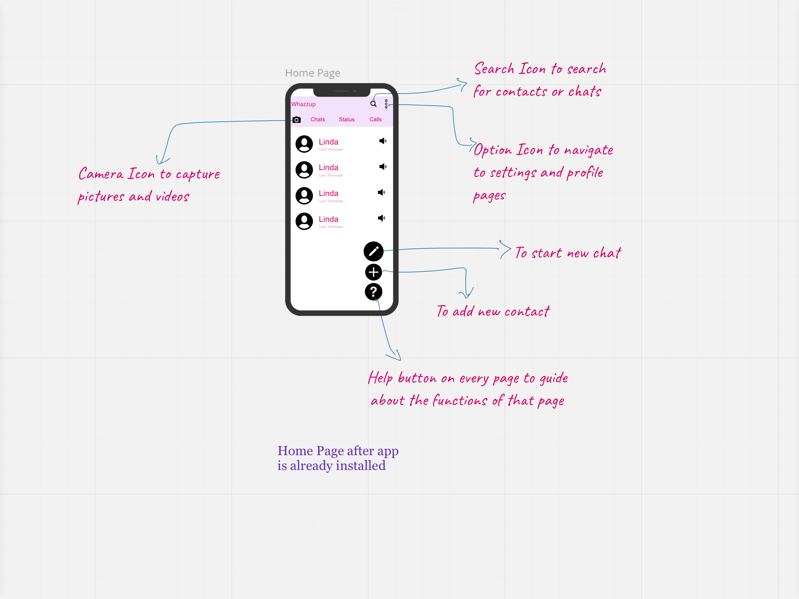
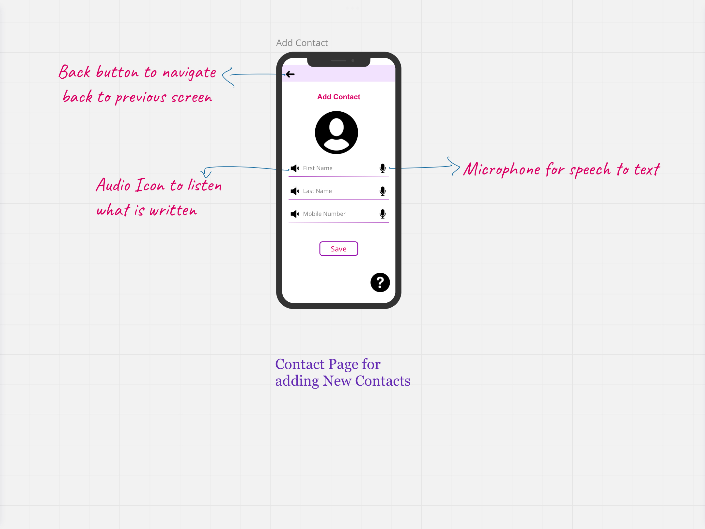
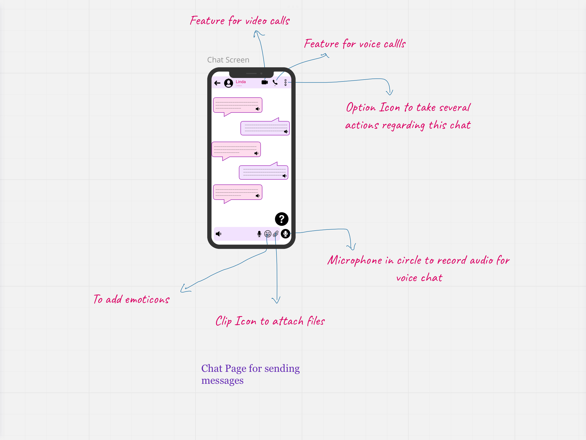
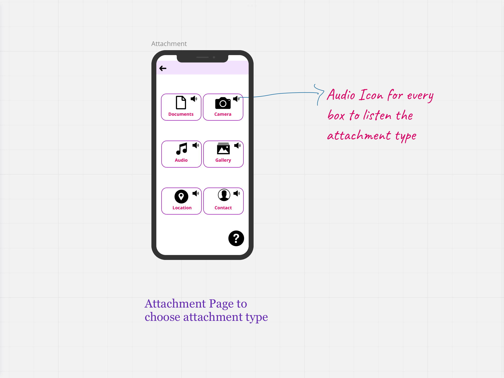
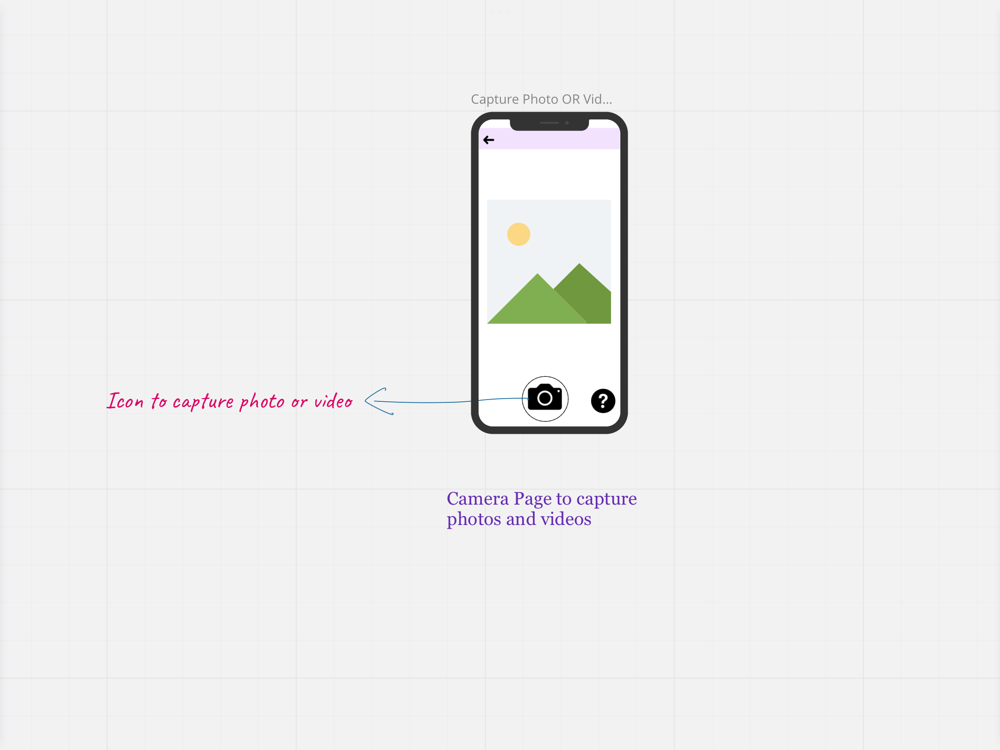

Author
Avinash Singh
Change history
Version 1.0
May, 21 2022, First Draft
Objective
Building WhatsApp for illiterate and digitally challenged people to let them communicate to anyone and anywhere in the world without any barriers.
Why build WhatsApp for the illiterate and digitally challenged? The Construct
Along with smartphones, our life is getting easy day by day and WhatsApp is one of the basic and important App for our day-to-day life everyone is now using WhatsApp to communicate either he has to text or do some video calls many of the company also prefer to give an update about their product on WhatsApp. Most of the world is going forward, there is a big chunk of the world population lagging, the people who are illiterate. 14% of the world population is illiterate in detail according to UNESCO “there are still 773 million illiterate adults around the world”. It’s small in percentage but huge in number. Various NGOs and organizations are working to make this number zero. Intellectual Meanwhile, we can try to help them by design thinking and reducing their daily life technical challenges by building WhatsApp for them.
Assumption
I am assuming that the person who is going to use this is only illiterate and digitally challenges people. This app is not for those people who is having some kind of disability due to which they are not able to read and write in any language for ex: - disability, Learning disordered. These people are not using WhatsApp for business purposes but only for a common purpose.
What is the core need?
WhatsApp is not only for chatting purposes several tasks are a basic necessity for day-to-day life in every common person like sending a document, sending a current location, and doing a video call.
User Stories
In order to understand the need of real users, I have surveyed 4 people aged between 20 to 50. Who try to use a smartphone but fail often due to their illiteracy but they can easily do some work with their mobile like: -
User Persona
Name: - Shlok
Age: - 27
Location: - Bangalore
About: - Shlok was born in Madurai Tamil Nadu now working in Zolo at Bangalore as a caretaker never attended any school or any education and doesn’t know how to read and write.
Digital experience: - Shlok is an experienced smartphone user. He uses his smartphone to watch videos on YouTube and also do some calls.
Pain Points:-
The Product solution
Audio-based UI: - Audio Icon after every heading or subheading, where it explains what is the meaning of that heading/icon. Audio base UI will help the users to interact with the application easily. A speaker button will be provided along with every heading or subheading and icons so that the user can understand what is that.
Minimal UI with big icons: - Decluttering unnecessary elements from the UI will help the user not be confused/distracted. Using big signs for icons like chat, call, etc. will make the user understand the function easily.
Tutorial section: - A tutorial section will be always there to help out the user.
Text to speech: - Going to use google text speech in place of the on-screen keyboard to write easily
Help button: - Help button on all the screens to give a tutorial of that particular screen options.
Using photos in place of Icons: - Well design photos are better than icons easy to understand for any person.
The primary chat option is voice secondary is text chat: - Voice chat is more useful for illiterate people it is easy to express in less time that why making voice chat a primary chat option.
UPI option: - Option to send and receive money easily.
Evaluating trade Off
| S NO | Priority | Feature/Requirements | Impact |
|---|---|---|---|
| 1 | 2 | Audio-based UI | High |
| 2 | 3 | Minimal UI with big Icon | High |
| 3 | 1 | Tutorial Section | High |
| 4 | 5 | Text to Speech | Medium |
| 5 | 4 | Help Button | Medium |
| 6 | 7 | Using a photo in place of the icon | Low |
| 7 | 6 | The primary chat option is the voice and the secondary is chat. | Medium |
| 8 | 8 | UPI Option | Low |
Observing the Priority, in this version only features with Priority 1, 2, 3, 4 & 5 will be implemented as these features are easy to build and have high impact in majority of use cases.
Wireframes
Its features are broadly elaborated in the wireframes.





Key Metrics
Key metrics for measuring the success of the features implemented, I will use the following,
North star metrics:
Open Issues
NA
Q&A
NA